Zappa is a way to deploy serverless web apps on AWS Lambda. In this post, we will build a simple Flask web app with Python and run the web app on AWS Lambda using Zappa in only a few steps.
What is Zappa?
Zappa is a Python package that bundles up web apps written in Flask or Django and deploys them to AWS (Amazon Web Services) Lambda. Lambda is Amazon's function as a service (FaaS) platorm. Why is Zappa so great? Because instead of deploying your Flask or Django web app on a cloud server, like an AWS EC2 instance or a Digital Ocean Droplet, you can deploy your app serverless as an AWS Lambda function.
This isn't really "serverless" (servers run AWS Lambda), but with an AWS Lambda function, you don't have to spin up servers, install packages, make sure security patches are up to date, and most of all: you don't have to pay for server time that isn't used.
A cloud server has to run all the time, whether or not someone visits your website. But an AWS Lambda function only runs when requested.
Think of it this way: Cloud servers are kind of like rental cars. AWS Lambda is sort of like calling an Uber. With Uber, you only pay for the rides you take. The rental car has to be paid for even when it's just sitting in your driveway. For only a trip or two in a month, Uber is pretty cheap compared to renting a car for a month.
So as long as your web traffic is low, running a web app serverless on AWS Lambda is pretty cheap compared to running a regular cloud server. AWS Lambda has a free tier. For a simple temporary hobby project, AWS is effectively free.
Also, serverless Lambda functions scale up and down based on demand. Continuing our car analogy: If you need to get 100 people to work, you can request 100 Ubers, but a rental car will only fit four adults.
Let's get started building our web app with Flask and deploying it on AWS Lambda with Zappa!
Install Zappa and Flask
Before we can deploy our web app on AWS Lambda with Zappa, first we need to install Zappa and a web framework to build our web app with. In this project, we are going to build a Flask app, so Flask needs to be installed too. You can install both of these packages with pip, the Python package manager.
Using a terminal, create a project directory called zappa_app and cd into it. Create a virtual environment, activate it, and install Zappa and Flask.
mkdir zappa_app
cd zappa_app
python -m venv venv
source venv/bin/activate
# on windows: venv\Scripts\activate
pip install flask
pip install zappa
You can verify the installation by calling two help commands at the terminal.
flask --help
zappa --help
If you see the help sections of Flask and Zappa, both of the packages were successfully installed.

A Simple Flask App
Next, we'll build a simple web app with Flask. This web app is super small and basic, but it will give you an idea of how Zappa and AWS Lambda works.
The GitHub repo with all the code used in the rest of this post can be found here: https://github.com/ProfessorKazarinoff/flask-zappa-tutorial
Create a file called app.py in the main project directory zappa_app we created earlier. Inside app.py, paste the following code. This super simple Flask app creates one webpage that displays the text Yeah, that is Zappa! Zappa! Zap! Zap!. You can modify the text between the <h1> .... </h1> tags to include any message you want.
Copy the code below into app.py.
# app.py
from flask import Flask
app = Flask(__name__)
@app.route('/')
def hello_world():
return '<h1>Yeah, that is Zappa! Zappa! Zap! Zap!</h1>'
# We only need this for local development.
if __name__ == '__main__':
app.run()
Ultimately, our web app will look something like the screen capture below.
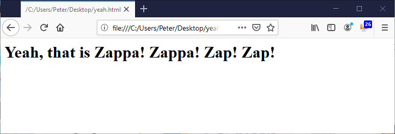
Test Locally
Next, let's test the Flask app locally. We want to make sure the web app runs on our computer correctly before we deploy the app with Zappa on AWS Lambda. Run the command below in a terminal to test out our simple Flask app. Make sure to run the command in the virtual environment we installed Flask and Zappa into in the previous step. You should see (venv) before the terminal prompt.
flask run
Browse to the URL shown in the terminal http://127.0.0.1:5000/. The webpage should look something like the screenshot below.
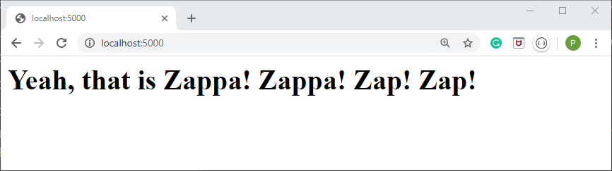
Great! Our web app works locally. But before we can deploy our Flask app on AWS Lambda, there are a couple more steps. Next, we need to dive into AWS permissions and credentials. Put your seatbelt on.
AWS Credentials
Before we can deploy our serverless web app on AWS Lambda, we need to create and save a set of AWS credentials in a ~/.aws/credentials file.
Sign Up for AWS
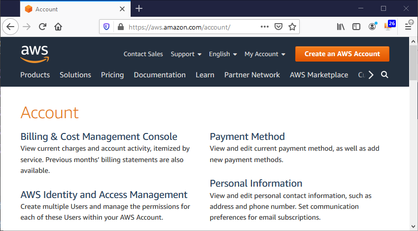
If you don't have an AWS account, sign up here: https://aws.amazon.com/account/. Signing up for an AWS account is free.
Create AWS Access Keys
Next, we need to create a new AWS access key id and secret access key. For me, this was kind of tricky. I mean how hard can it be to get an access key from AWS?
Turns out permissions in AWS is a complicated beast.
Log into your AWS account at https://aws.amazon.com/
Click the orange [Sign In to the Console] button on the upper right.
Within the AWS Console, type IAM into the search box. IAM is the AWS user and permissions dashboard.
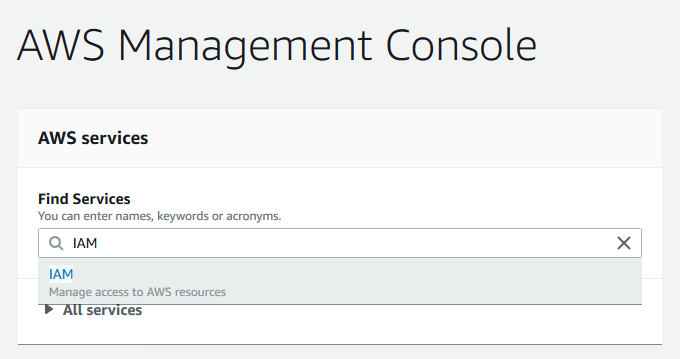
Before we go any further, let's talk about permissions in AWS. This took me a while to figure this out. There are a couple of layers and roles to understand: accounts, groups, users, permissions, and policies.
- Accounts: One person has an AWS account. An AWS account is usually defined by a username (email address) and password. Accounts are not the same thing as users.
- Users: Each account can have multiple users associated with it. The account administrator (you) can create new users and delete old users. Users have a set of permissions and policies that determines what they can do on AWS. Users can belong to groups and inherit any of the permissions or policies that come with that group. Each user has an access key id and secret access key. I generally do not assign permissions and policies to users. Instead, I usually have users inherit permissions and policies from a group.
- Groups: Each account can have multiple groups. Users belong to groups. A group has a particular set of permissions and policies that get passed to the users that are part of the group. Groups do not have access key id's or secret access keys. I generally assign permissions and policies to groups.
- Permissions: A permission is a small piece of work a user or group is allowed to do on AWS. For instance, one permission could allow a user or group to upload to an S3 bucket. Another permission could allow a user or group to shut down an EC2 instance. Permissions are grouped into policies.
- Policy: Policies are groups of permissions assembled together. Since a user will probably want to both upload and download from S3, these two permissions could be combined into one policy. Users and groups can have many policies assigned to them.
- Managed Policy: Managed policies are permissions grouped by Amazon that covers some sort of sub-functionality in AWS. For instance, one managed policy created by Amazon is AWSLambdaFullAccess. This managed policy allows a user or group to do anything on AWS Lambda.
- Inline Policy: Inline policies are permissions grouped together by you. You can pick individual permissions and assemble them into an inline policy. A user or group can have many inline and managed policies at the same time. Inline policies are stored in json format.
To create the AWS credentials needed to run our web app, we need to complete a couple of steps:
- Create a group
- Assign an inline policy to the group
- Create a user and add the user to the group
- Copy the user's keys
1. Create a group
In the IAM Dashboard, click [Groups] on the left-hand menu.
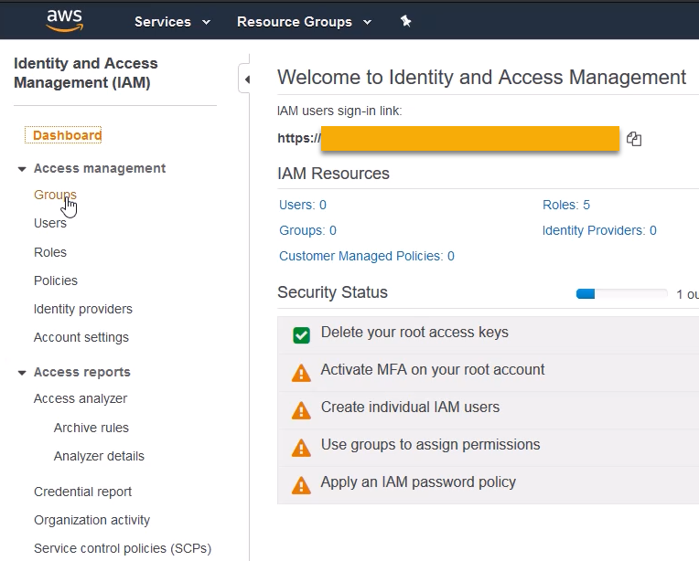
Then create a new group with the [Create New Group] button.
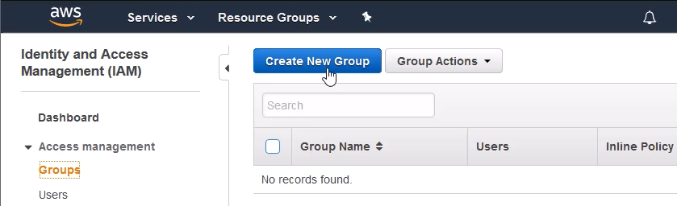
Give your group a name, I called my group zappa_group, and click [Next Step].
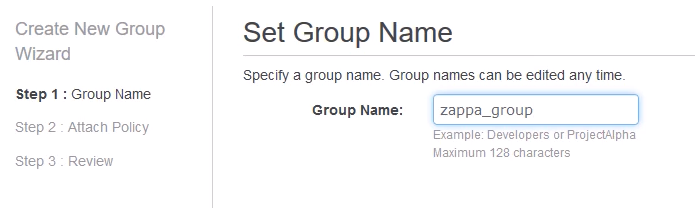
In the Attach Policy screen, don't check any radio boxes, just click [Next Step]. All of the attached policy options are AWS managed policies. We want to create our own specific inline policy for our zappa_group, so we don't need to select any pre-selected AWS policies.
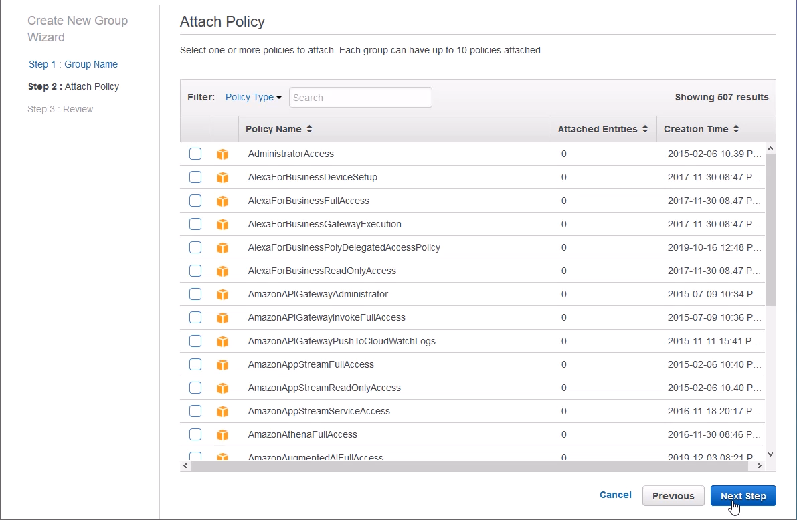
At the review screen, review the group you created and click [Create Group].
Next, we will copy and paste an inline policy written in json format and assign our custom inline policy to our group.
2. Assign an inline policy to the group
Double, double toil and trouble... I had a tough time figuring out which AWS security permissions I needed to attach to my AWS User to get Zappa to work. In the end, I attached one manually-created custom inline policy to the group.
I think it's a good idea to attach the security policy to a group. Then you can add and delete users easily without losing any info in the security policy.
At the Groups main screen, click on the group you just created to view the group's details.
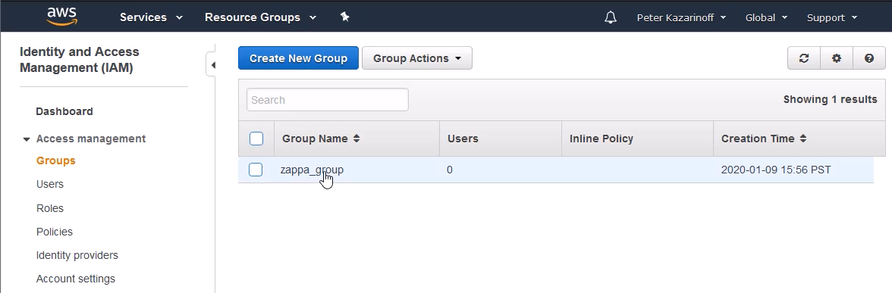
In the Permissions tab, under the Inline Policies section, choose the [click here] link to create a new Inline Policy.
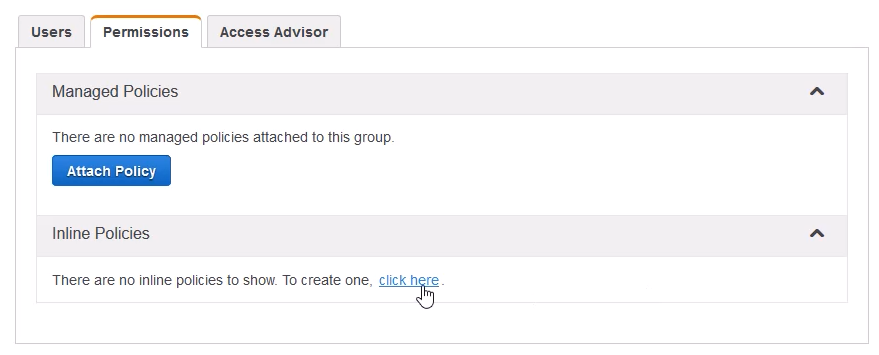
In the Set Permissions screen, click the Custom Policy radio button and click the [Select] button on the right. We could use the policy generator to create our inline policy, but instead, we will create a Custom Policy written in json format.
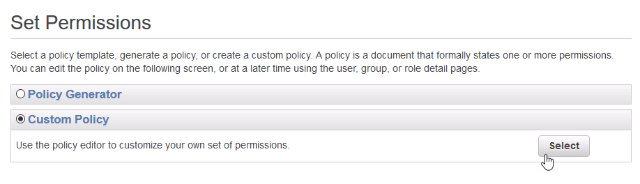
Type a policy name and paste the json below into the Policy Document window.
Note the XXXXXXXXXXX in the inline policy should be replaced by your AWS Account Number.
Your AWS Account Number can be found by clicking [Support] → [Support Center]. Your Account Number is listed in the Support Center on the upper left-hand side.
The json for the inline policy applied to the group is below.
{
"Version": "2012-10-17",
"Statement": [
{
"Effect": "Allow",
"Action": [
"iam:AttachRolePolicy",
"iam:GetRole",
"iam:CreateRole",
"iam:PassRole",
"iam:PutRolePolicy"
],
"Resource": [
"arn:aws:iam::XXX_MY_AWS_ACCOUNT_ID_XXX:role/*-ZappaLambdaExecutionRole"
]
},
{
"Effect": "Allow",
"Action": [
"apigateway:DELETE",
"apigateway:GET",
"apigateway:PATCH",
"apigateway:POST",
"apigateway:PUT",
"events:DeleteRule",
"events:DescribeRule",
"events:ListRules",
"events:ListRuleNamesByTarget",
"events:ListTargetsByRule",
"events:PutRule",
"events:PutTargets",
"events:RemoveTargets",
"lambda:AddPermission",
"lambda:CreateFunction",
"lambda:DeleteFunction",
"lambda:GetAlias",
"lambda:GetFunction",
"lambda:GetFunctionConfiguration",
"lambda:GetPolicy",
"lambda:InvokeFunction",
"lambda:DeleteFunctionConcurrency",
"lambda:ListVersionsByFunction",
"lambda:RemovePermission",
"lambda:UpdateFunctionCode",
"lambda:UpdateFunctionConfiguration",
"cloudformation:CreateStack",
"cloudformation:DeleteStack",
"cloudformation:DescribeStackResource",
"cloudformation:DescribeStacks",
"cloudformation:ListStackResources",
"cloudformation:UpdateStack",
"cloudfront:UpdateDistribution",
"logs:DeleteLogGroup",
"logs:DescribeLogStreams",
"logs:FilterLogEvents",
"route53:ListHostedZones"
],
"Resource": [
"*"
]
},
{
"Effect": "Allow",
"Action": [
"s3:CreateBucket",
"s3:ListBucket",
"s3:ListBucketMultipartUploads"
],
"Resource": [
"arn:aws:s3:::zappa-*"
]
},
{
"Effect": "Allow",
"Action": [
"s3:DeleteObject",
"s3:GetObject",
"s3:PutObject",
"s3:AbortMultipartUpload",
"s3:ListMultipartUploadParts"
],
"Resource": [
"arn:aws:s3:::zappa-*/*"
]
}
]
}
After pasting and modifying the json with your AWS Account Number, click the [Validate Policy] button to ensure you copied valid json. Then click the [Apply Policy] button to attach the inline policy to the group.
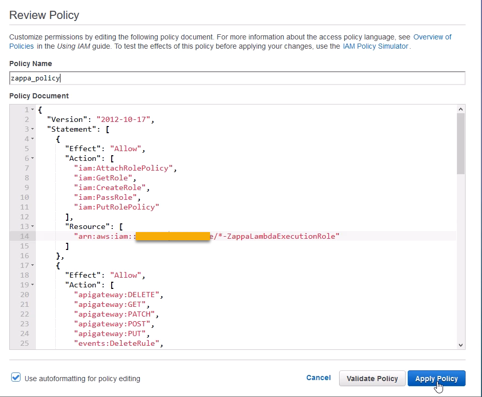
The json above is what worked for me. But, I expect this set of security permissions may be too open. To increase security, you could slowly pare down the permissions and see if Zappa still deploys. The settings above are the ones that finally worked for me. You can dig through this discussion on GitHub if you want to learn more about specific AWS permissions needed to run Zappa: https://github.com/Miserlou/Zappa/issues/244.
3. Create a user and add the user to the group
Back at the IAM Dashboard, create a new user with the [Users] left-hand menu option and the [Add User] button.
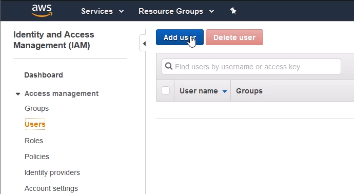
In the Add user screen, give your new user a name and select the Access Type for Programmatic access. Then click the [Next: Permissions] button.
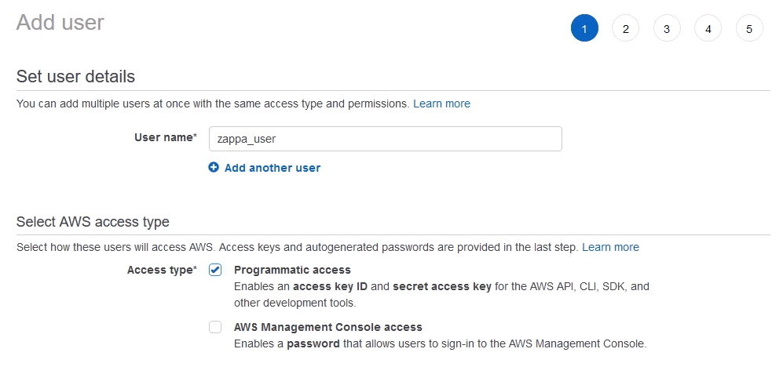
In the Set permissions screen, select the group you created earlier in the Add user to group section and click [Next: Tags].
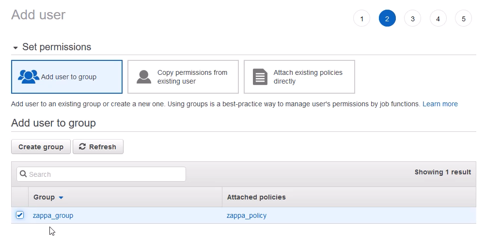
Tags are optional. Add tags if you want, then click [Next: Review].
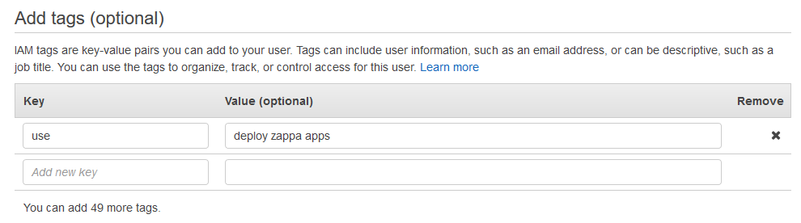
Review the user details and click [Create user]
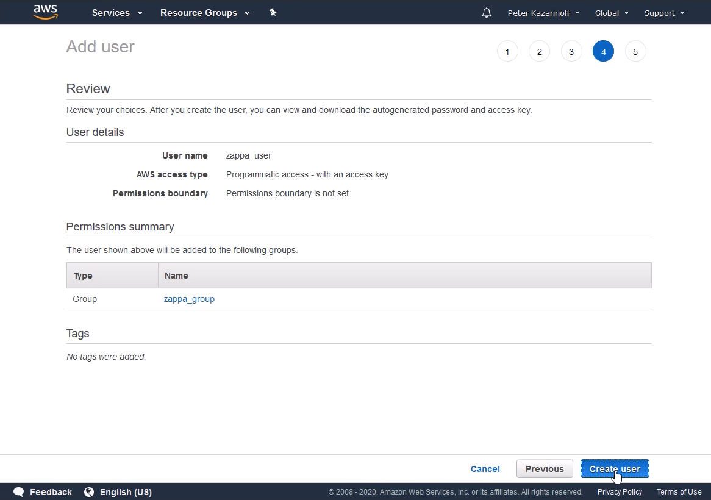
You should now be able to see your new user attached to your new group. Hopefully, you see a green Success screen.
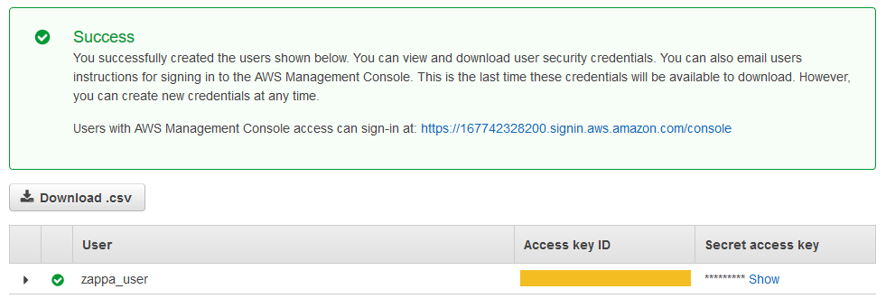
4. Copy the user's keys
Click the [Show] button under the Secret access key heading. You should now be able to see both the Access key ID and the Secret access key. We need both of these keys to deploy our Zappa app.
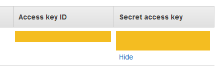
Don't close the AWS IAM window yet. In the next step, you will copy and paste these keys into a file. At this point, it's not a bad idea to copy and save these keys into a text file in a secure location. Make sure you don't save keys under version control.
Copy the Keys to a credentials File
Save the AWS access key id and secret access key assigned to the User you created in the file ~/.aws/credentials. Note the .aws/ directory needs to be in your home directory and the credentials file has no file extension.
Note: On Windows, save the credentials file in
C:\> dir "%UserProfile%\.aws
In the credentials file, copy the text below then modify the XXXXXXXX portions to include your User's keys (no quotes).
[default]
aws_access_key_id = XXXXXXXXXXXXXXXXXXXXXXXXXX
aws_secret_access_key = XXXXXXXXXXXXXXXXXXXXXXXXXXXXXXXXXX
Now that our AWS credentials are set, close the AWS IAM browser window. Almost time to let Zappa do it's magic!
Create a zappa_settings.json File
Next, we need to create the Zappa settings file: zappa_settings.json. Create this file by typing the command zappa init into a terminal (remember the virtual environment (venv) needs to be active when the command is entered).
zappa init
The command creates a zappa_settings.json file in the directory where the command was run.
Edit the zappa_settings.json file so that the "profile_name": "default" corresponds to the name in square brackets we specified in .aws/credentials. The "aws_region" also needs to be set. I'm in Oregon, so I choose "us-west-2". All other default settings from zappa init are OK. Note the "s3_bucket" name may be different for you. Zappa automatically creates a random S3 bucket name.
The complete zappa_settings.json file is below:
{
"dev": {
"app_function": "app.app",
"profile_name": "default",
"project_name": "zappa-flask-app",
"runtime": "python3.7",
"s3_bucket": "zappa-9cf4j0c1h",
"aws_region": "us-west-2"
}
}
Save a requirements.txt File
Before we deploy our web app on AWS Lambda (we are almost done!), we'll create a requirements.txt file using pip freeze.
pip freeze > requirements.txt
NOTE: I saved my project directory in a GitHub repo and included a
LICENSE,.gitignoreand aREADME.md. Saving the project on GitHub isn't necessary, but I like to keep my code in multiple places and GitHub acts as the central storage location for the project.
The following files should now be in the main project directory zappa_app:
zappa_app/
├── app.py
├── requirements.txt
├── venv/
└── zappa_settings.json
Deploy on AWS
It's time to deploy our Flask app on AWS Lambda! Deploy the web app with the command below:
zappa deploy dev
If everything worked, you should be able to browse to the URL listed in the terminal (something like https://heq5x2wioxcz.execute-api.us-west-2.amazonaws.com/dev) and see your web app running in all its serverless glory.
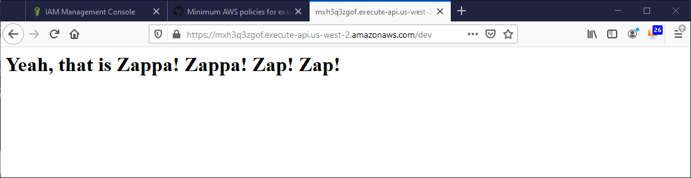
Pretty Cool. We got a serverless Flask app running on AWS Lambda.
Modify the App and Re-deploy
We can modify our app and see the results live on the web. Open the app.py file and change the text in between the <h1> ... </h1> tags. You can change the message to display any text you want.
# app.py
...
@app.route('/')
def hello_world():
return '<h1>Yeah, that is Zappa! Zappa! Zap! Zap! I am revised</h1>'
...
Re-deploy the app with the command below:
zappa update dev
Reload your browser and see the modified text.
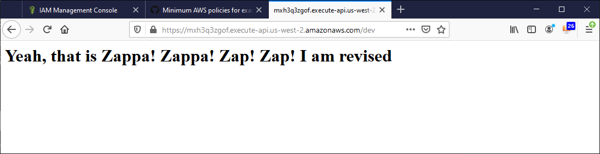
Shutdown and Delete the App
At some point, you will want to shut down and delete your app. Who knows, maybe your app becomes super popular and your AWS bill goes through the roof? (we can only hope). To shutdown the Zappa app, type the following command:
zappa undeploy dev
Summary
In this post, we created a simple web app with Flask and deployed it to AWS Lambda with Zappa. We completed the project in a few steps. First, we built a simple Flask app and ran it locally. Next, we messed around with AWS permissions and saved an access key id and secret access key in ~/.aws/credentials. Finally, we ran zappa init and zappa deploy dev to deploy our web app on AWS Lambda. It's amazing how little code you need to write to deploy a serverless Flask app on AWS Lambda with Zappa.
The GitHub repo with all the code used in this post can be found here: https://github.com/ProfessorKazarinoff/flask-zappa-tutorial
Happy Zapping!